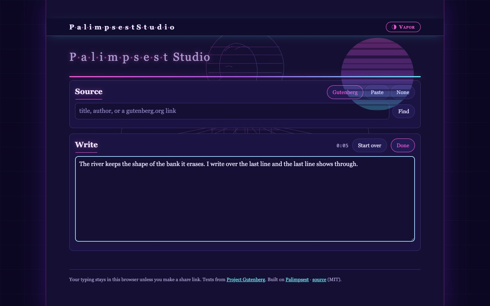
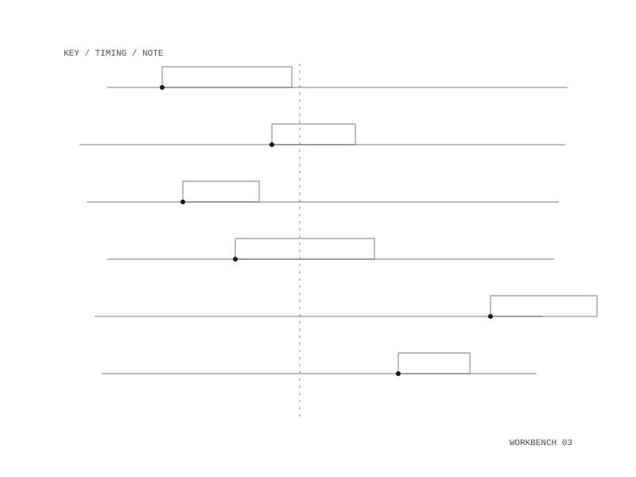

14 / project
Palimpsest Studio
Type a passage and hear the typing played back as a score
Type a passage and hear the typing played back as a score. The text retypes itself while the same session is drawn as notation and played by a synthesizer.


Three steps
- Source. Find a book on Project Gutenberg, paste a passage or your own draft, or open a text file. It sits above the writing area as a reference.
- Write. Recording starts with your first key. Press Done when you are finished.
- Playback. Download the WAV or the session, or make a share link.
Where your writing goes
Recording, playback and the WAV all run in your browser. Nothing you type reaches the server unless you press Share link, Publish. That stores what you typed, its timing and your sound settings, and anyone with the link can play it.
Where it comes from
A public fork of the Writing Record in Palimpsest. The playback half of the page is Palimpsest's own, and a session saved here opens in the full Palimpsest app.
Built with
Python standard library, no dependencies
Tested on iPhone and desktop WebKit
Python standard library, no dependencies
Tested on iPhone and desktop WebKit
Licence
MIT
MIT